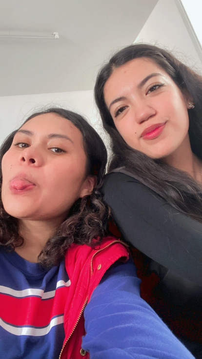

¡¡¡ Bienvenidos A Nuestro Sitio Web !!!
Somos tres estudiantes apasionados por la tecnología y el desarrollo web. Este proyecto final representa la culminación de nuestro esfuerzo y aprendizaje a lo largo del curso. Nuestro objetivo es crear una página web funcional y atractiva que demuestre nuestras habilidades y conocimientos adquiridos. En esta página, podrán explorar el proceso de nuestro desarrollo, conocer más sobre nuestras experiencias individuales y ver cómo hemos colaborado para superar desafíos y alcanzar nuestras metas. Esperamos que disfruten navegando por nuestro sitio tanto como nosotros disfrutamos creándolo.
